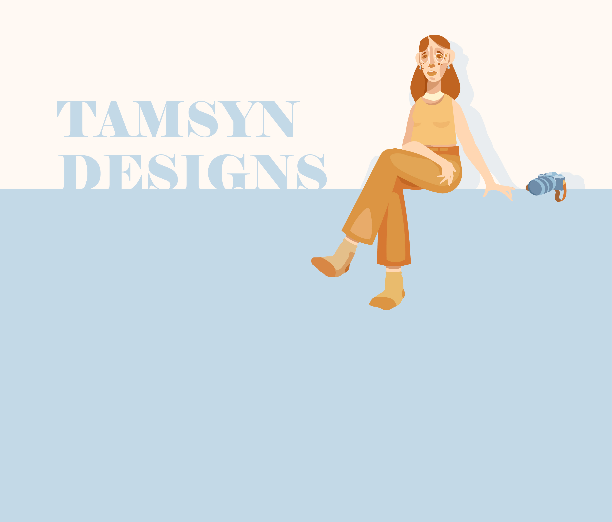

STRING
STRING
Publication Covers
As my final studio outcome as a student, STRING explores the sense of control individuals feel they do not have. String is a self agency campaign capturing the delicate nature of our relationship with agency, how we can grow or strung. The campaing featured an accordion publication, wearables and a website.
As my final studio outcome as a student, STRING explores the sense of control individuals feel they do not have. String is a self agency campaign capturing the delicate nature of our relationship with agency, how we can grow or strung. The campaing featured an accordion publication, wearables and a website.
 STRING
STRING
Publication Side One
The String publication, once opened is a type heavy run through on the purpose of the campaign. Cotton thread is interwoven between each of the pages, and provides a horizontal draw across the length of the print. The thread is also given its own page to weave and create movement.
The String publication, once opened is a type heavy run through on the purpose of the campaign. Cotton thread is interwoven between each of the pages, and provides a horizontal draw across the length of the print. The thread is also given its own page to weave and create movement.
 STRING
STRING
Scarf One
 STRING
STRING
Scarf Two
MORE FOLIO WORK TO COME
=======
CONTACT ME
>>>>>>> parent of f034339 (folio fill in 1 (arts contacts and string))
ARTS PROJECTS

first object
this project is about ...
second object
this project is about ...
third object
this project is about ...
fourth object
this project is about ...
thanks